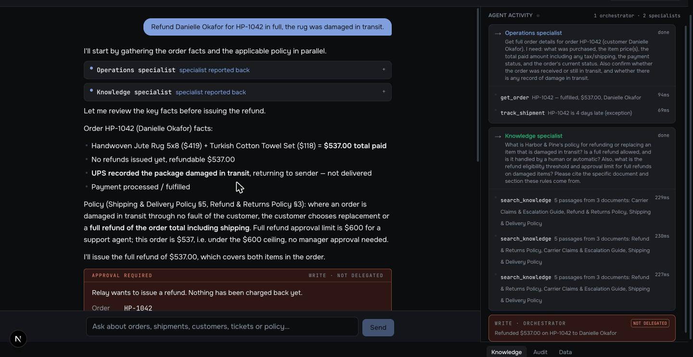
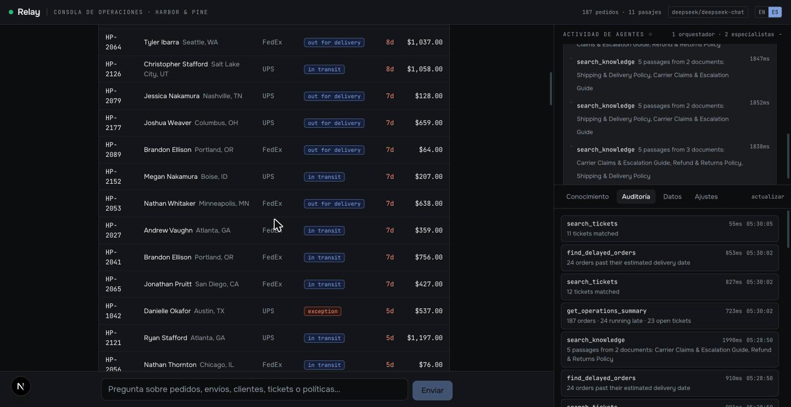

A multi-agent AI system that answers from a company's own operational data and takes governed actions with human approval.
Next.js 16 · AI SDK v7 · Claude / DeepSeek · PostgreSQL + pgvector · Local embeddings · Self-hosted
This is a showcase build, not a client engagement. Harbor & Pine is a fictional US home-goods brand and every customer, order, shipment and refund in it is generated data. The architecture, the code and the numbers in this document are real and reproducible in the live demo. The company is not.
Operations and support teams live in a gap. The answer to "why hasn't this customer's order arrived, and do we owe them money?" sits in two places at once: the order database, and a policy document nobody has read since onboarding. Bridging that gap by hand is most of what a support agent does all day.
Relay closes it. It is a chat console where an operations team asks in plain English, and gets an answer grounded in both sources at once — the live database and the company's own written policy — with the reasoning and every underlying query visible on screen.
It also acts. Relay can issue a refund. It never does so on its own: it proposes the action, states the amount, cites the policy that justifies it, and waits for a human to approve. Nothing moves until someone presses a button.
What a buyer is looking at: a system that reads their real data, applies their real rules, shows its work, and cannot spend their money without permission.


The same conversation, further down: a real table with status badges and days late, generated from "what is running late?". Nothing here is prose the model wrote — the frontend renders the tool result.
One console, three panes. Left: the conversation. Right, top: live agent activity — which specialist was called, the exact instruction it was given, every tool it ran, and the real latency of each. Right, bottom: a tabbed inspector for the document library, the audit log, and the dataset.
Three deliberate choices:
get_order → HP-1042 — fulfilled, $537.00, Danielle Okafor · 94ms is what makes a system legible.write, and tagged not delegated. Colour means something in this interface or it is not used.Browser (useChat, streaming UI message parts)
│ POST /api/chat per-IP rate limit
▼
Relay orchestrator ── owns issue_refund directly, never delegates it
│
├── consult_operations ──▶ Operations specialist (own context, 7 read tools)
│ └──▶ PostgreSQL
│
├── consult_knowledge ──▶ Knowledge specialist (own context, 1 read tool)
│ └──▶ hybrid retrieval
│ ├── pgvector cosine (semantic)
│ └── tsvector + BM25 (keyword)
│ └── fused by reciprocal rank
│
└── issue_refund ──▶ HUMAN APPROVAL GATE ──▶ PostgreSQL write
└──▶ audit log
Every tool call, from any agent: input · result · status · latency → audit log
One datastore. Business tables and document embeddings live in the same PostgreSQL instance. One thing to run, one thing to back up, one thing to explain.
| # | Agent | Specialty | Tools |
|---|---|---|---|
| 1 | Relay (orchestrator) | Reads the request, decides who handles it, synthesises the answer, owns the write path | 2 delegations + 1 write |
| 2 | Operations specialist | What actually happened: orders, shipments, customers, tickets, and the operational overview. Own context window. | 7 read |
| 3 | Knowledge specialist | What the rules say: policy, thresholds, carrier requirements. Own context window. | 1 read |
Why split at all. Not for speed — delegation costs latency. It buys three things: tool selection is far more reliable when a model picks from six related tools instead of fourteen unrelated ones; each specialist's context stays clean; and the write path is structurally isolated.
Why the write is not delegated. issue_refund sits on the orchestrator, where the human approval gate lives. No specialist can move money, and no amount of delegation can route around the approval step. This is a security property of the topology, not a setting that can be misconfigured away.
| Tool | Owner | Effect | What it does |
|---|---|---|---|
find_delayed_orders |
Operations | read | Orders past their estimated delivery date and not delivered |
search_orders |
Operations | read | Orders by status, customer or recency |
get_order |
Operations | read | One order in full: items, shipment, tickets, refunds |
track_shipment |
Operations | read | Shipment position, whether it is late, and by how many days |
search_tickets |
Operations | read | Support tickets by status, priority or category |
get_customer |
Operations | read | One customer with order and ticket history |
get_operations_summary |
Operations | read | Counts by status, delays by carrier, 14-day volume trend |
search_knowledge |
Knowledge | read | Hybrid retrieval over the company's documents |
issue_refund |
Orchestrator | write | Issues a refund. Requires human approval. Capped and idempotent. |
Every tool validates its input with a schema, runs one bounded query, and returns structured data plus a one-line human summary. The model is instructed that tool results are the only source of truth and that it may not invent anything a tool did not return.
Relay does not describe an order in prose and hope the reader believes it. Each tool result is rendered as the thing it actually is.
| Ask | What appears |
|---|---|
| "What is running late?" | A sortable table: order, customer, destination, carrier, status badge, days late, value |
| "What happened with HP-1042?" | An order record: line items, a shipment track with its stages, linked tickets, any refunds |
| "Give me an overview" | A dashboard: stat tiles, orders by status, delays by carrier, and a 14-day volume trend |
| A policy question | The cited passages themselves, each labelled with the document it came from and whether semantic or keyword search found it |
The model chooses which tool to call. The frontend owns how the result looks. That split matters: the output is always well-formed and on-brand no matter what the model does, and there is no way for a bad generation to produce a broken layout.
The charts are hand-built inline SVG rather than a charting library, so they inherit the console's theme and are correct in light and dark without a second palette to maintain. The two series colours are validated for colourblind separation against both surfaces (CVD ΔE 15.5, normal-vision ΔE 20.9, contrast above 3:1) rather than chosen by eye, and every status colour ships with its label so identity is never carried by colour alone.
Documents are uploaded through the console — PDF, Markdown or plain text — then extracted, split into overlapping passages, embedded, and stored as vectors alongside the business data.
Embeddings run locally, inside the application process, using all-MiniLM-L6-v2 at 384 dimensions. There is no embedding API key, no per-token cost, and the contents of an uploaded document never leave the server. For a client evaluating whether to hand over their internal policies, that last point is usually the deciding one.
Retrieval is hybrid, because neither method is sufficient alone:
Retrieval is also directly inspectable: a preview panel in the console runs the same search the agent runs and shows which passages came back, which method found each one, and how long it took.
A real exchange, captured from the running system.
Operator: "Refund Danielle Okafor for HP-1042 in full, the rug was damaged in transit."
The orchestrator opens both lines of inquiry at once: "I'll start by gathering the order facts and the applicable policy in parallel."
Operations specialist is asked for the full order picture. It runs get_order (94ms) and track_shipment (69ms), and reports: HP-1042, fulfilled, $537.00, Danielle Okafor, four days past estimate, carrier status exception.
Knowledge specialist is asked what the policy says about damage in transit and what the approval ceiling is. It runs search_knowledge three times (227–230ms) across three documents.
The orchestrator synthesises, and catches a distinction nobody prompted it to look for:
"Note the delay nuance: the order is only 4 days past estimate, which alone would only justify the shipping charge refund under the 4–7 day tier. But the carrier has reported damage, so this is treated as lost/damaged in transit, triggering the full refund under section 5 regardless of the day count."
"Full refund approval limit is $600 for a support agent; this order is $537, i.e. under the $600 ceiling, no manager approval needed."
issue_refund is called. It does not run. The console renders a confirmation card: order HP-1042, amount $537.00, and the reason citing Shipping & Delivery Policy section 5 and Refund & Returns Policy section 3. Two buttons.
The operator approves. The tool executes in 47ms, writes the refund, and records the call in the audit log against the approver.
The result is a decision that would have taken a support agent several minutes and two browser tabs, made in about twenty seconds, with the policy citation attached and a human still holding the trigger.
The tool layer, the approval policy and the audit trail are the system. The model is a swappable part, selected by an environment variable, currently supporting Anthropic Claude and DeepSeek.
This matters commercially more than technically: a client already standardised on one provider does not have to be argued out of it, and cost per conversation can be tuned without touching the architecture.
| # | Step | Command |
|---|---|---|
| 1 | Install dependencies | npm install |
| 2 | Configure | cp .env.example .env — set RELAY_PROVIDER and the matching API key |
| 3 | Start PostgreSQL | npm run db:up |
| 4 | Create the schema | npm run db:push |
| 5 | Load the demo dataset | npm run db:seed |
| 6 | Run | npm run dev |
Deployment is self-hosted: a standalone Next.js build and a PostgreSQL container behind a reverse proxy. No managed platform is required and no vendor lock-in is introduced.
| Capability | Where to look |
|---|---|
| Multi-agent orchestration with scoped tools | Section 4 |
| Generative UI: tables, records and charts, not prose | Section 6 |
| Production RAG with hybrid retrieval | Section 7 |
| Tool calling against a live database | Section 5 |
| Human-in-the-loop control of write actions | Sections 8 and 9 |
| Auditability and observability | Section 9 |
| Document ingestion with data locality | Section 7 |
| Provider independence | Section 10 |
| Self-hosted deployment | Section 11 |